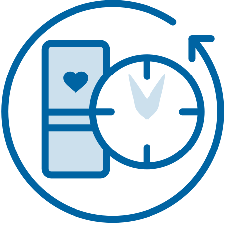
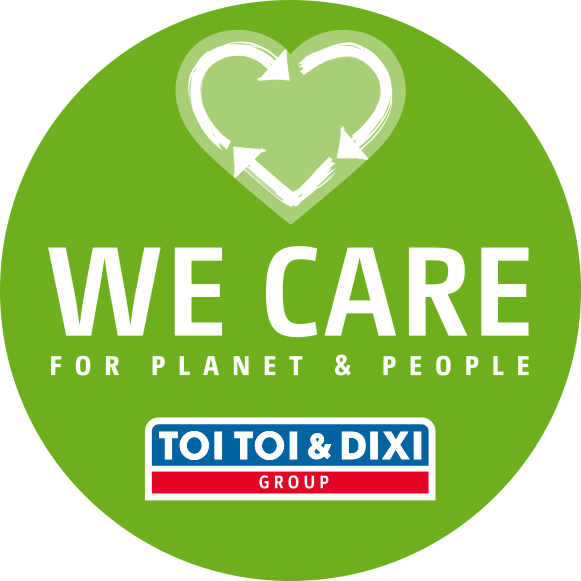
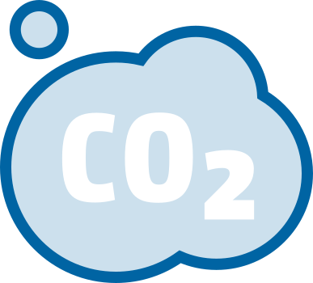
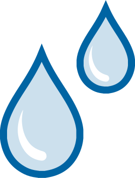
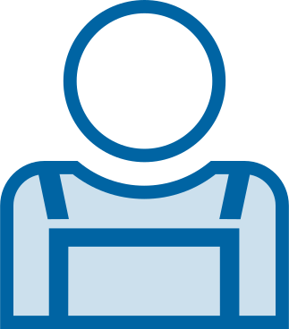

TOI TOI & DIXI Group tvarumo ataskaita
"TOI TOI & DIXI" siūlome mobiliuosius sanitarinius įrenginius ir jų pritaikymo sprendimus, bet kokioje vietoje, kurioje dar nėra atitinkamos infrastruktūros. Vykdydami savo veiklą stengiamės kuo taupiau naudoti išteklius ir tausoti aplinką. Be to, didelę reikšmę teikiame tam, kad savo veiklą vykdytume tausodami išteklius ir saugodami aplinką. Siekiame pirmauti tvarumo srityje. Nuolat tobulindami savo gaminius ir paslaugas, mažindami savo veiklos poveikį aplinkai ir užtikrindami pagarbią ir saugią darbo aplinką savo darbuotojams, aktyviai prisidedame prie darnaus vystymosi. Nuo 2022 m., kai sukūrėme tvarumo valdymo sistemą, šiose srityse nuėjome ilgą kelią ir dabar šią pažangą fiksuojame savo tvarumo ataskaitoje.
Atsisiųskite dabartinę tvarumo ataskaitą čia:
PRODUKTAI IR PASLAUGOS
Savo produktais ir paslaugomis siekiame teikti visapusiškus sprendimus, kurie atitiktų tiek klientų, tiek tvarumo poreikius. Atsižvelgdami į klientų poreikius, užtikriname aukščiausią įmanomą higienos lygį, nuosekliai didindami mobiliųjų biotualetų, turinčių praustuves ir dezinfekavimo dozatorius, skaičių. Mūsų įsipareigojimą užtikrinti aukščiausią higieną rodo mūsų naujasis produktas TOI HYGIENE+, kurio pagrindiniai komponentai pagaminti naudojant naują antimikrobinę medžiagą. Kalbant apie tvarumą, investuojame į gaminių ilgaamžiškumą, energijos vartojimo efektyvumą ir aplinkai nekenksmingų medžiagų naudojimą. Vienas iš pagrindinių būdų, kaip tai darome, - didiname perdirbtų medžiagų procentinę dalį savo gaminiuose. Puikus to pavyzdys - mūsų DIXI GREEN biotualetai, kurių sudėtyje yra ne mažiau kaip 50 % perdirbto plastiko, iš kurio didelę dalį sudaro seni žvejybos tinklai.
Faktai ir skaičiai
12.668.605 PASLAUGOS PER METUS
425.943 BIOTUALETAI

> 20 TARNAVIMO LAIKAS

APLINKA
Aplinkos apsaugą vertiname labai rimtai ir aktyviai imamės veiksmų, kad sumažintume išmetamų teršalų kiekį ir išvengtume taršos. Pavyzdžiui, mūsų transporto priemonių parkas yra atnaujinamas, palaipsniui diegiant alternatyvias pavaros sistemas, nes tai yra puikus būdas, mažinant išmetamo CO2 kiekį. Taip pat rimtai siekiame efektyviai ir tausojančiai naudoti mūsų planetos gamtinius išteklius. Dėl to standartizavome ir optimizavome savo procesus ir paslaugas, kad iki minimumo sumažintume vandens ir cheminių medžiagų naudojimą. Nuolatiniai procesų tobulinimo tyrimai reiškia, kad nuolat mažiname savo poveikį aplinkai.
Faktai ir skaičiai
78 MILIJONAI NUVAŽIUOTŲ KILOMETRŲ

36,672 ANGLIES DVIDEGINIO **

126,943 M³ LITRŲ GĖLO VANDENS
DARBUOTOJAI
Esame ypač atsakingi už savo darbuotojus - jei ne dėl kitos priežasties, tai dėl to, kad be jų, be jų darbo, atsidavimo ir motyvacijos TOI TOI & DIXI grupė nebūtų tokia sėkminga, kokia yra šiandien. Ši atsakomybė apima saugios darbo aplinkos užtikrinimą - tai sritis, kurioje nelaimingų atsitikimų skaičiaus mažinimas yra mūsų svarbiausias prioritetas. Nuosekliai ir valdydami darbuotojų saugą ir sveikatą, mažiname jiems kylančią riziką. Taip pat didelę reikšmę teikiame savo vidinių mokymų plėtrai ir tobulinimui. Taip yra todėl, kad nuolatinis mokymas ir profesinis tobulėjimas yra svarbiausia, kad mūsų darbuotojai galėtų nuolat gilinti savo žinias ir patirtį. Investuojame į jų nuolatinį profesinį tobulėjimą, kad jie galėtų nuolat atnaujinti savo įgūdžius ir daryti karjeros pažangą. Kartu aktyviai kuriame įmonės kultūrą, pagrįstą atvirumu, įvairove ir abipuse pagarba. Tam reikalingas dialogas, o vienas iš svarbiausių būdų, kaip jį palengvinti, yra reguliariai atliekamos darbuotojų apklausos.
Faktai ir skaičiai
5320 DARBUOTOJAI

2212 VAIRUOTOJAI
44 METAI Ø AMŽIUS *
* Penkiose didžiausiose, daugiausiai pardavimų generuojančiose TOI TOI & DIXI šalyse
** Penkiose didžiausiose, daugiausiai pardavimų generuojančiose TOI TOI & DIXI šalyse išmetamo anglies dvideginio kiekis